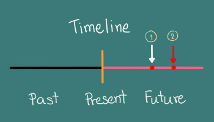
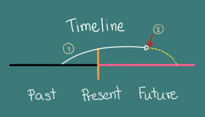

♦ ประโยคบอกเล่าจะเป็นโครงสร้างธรรมดา คือ ประธาน + will + have + กริยาช่องที่ 3
| I, You, We, They, He, She, It | will | have | eaten. |
♦ ประโยคปฏิเสธคล้ายบอกเล่า เพียงแค่เติม not หรือ never หลัง will เท่านั้น
| I, You, We, They, He, She, It | will not | have | eaten. |
การเปลี่ยนประโยคบอกเล่าเป็นคำถามก็ใช้สูตรเดิม คือ ถ้ามีกริยาช่วยในประโยค ให้ใช้กริยาช่วยขึ้นต้นประโยคได้เลย กริยาช่วยใน Future Simple Tense คือ will
ประโยคคำถามแบ่งออกเป็นสองประเด็นคือ ถามในรูปแบบบอกเล่า และถามรูปแบบปฏิเสธ
1. การถามในรูปแบบบอกเล่า
| Will + ประธาน + have + กริยาช่องที่ 3 |
2. การถามในรูปแบบปฏิเสธ
| Will + ประธาน + not+ have + กริยาช่องที่ 3 |
| Won’t+ ประธาน + have + กริยาช่องที่ 3 |
ใช้กล่าวถึงเหตุการณ์ที่จะทำเสร็จสมบูรณ์ ณ เวลาหนึ่งในอนาคต
♦ แบบมีเหตุการณ์เดียว ส่วนมากจะระบุเวลาในอนาคตด้วย เช่น
- I will have eaten breakfast at 8 o’clock tomorrow.
ฉันจะกินข้าวเช้าเรียบร้อยแล้ว เวลา 8 นาฬิกา วันพรุ่งนี้
หมายความว่า พรุ่งนี้เวลา 8 นาฬิกา ฉันจะกินข้าวเสร็จแล้วเรียบร้อย ถ้าจะซื้ออะไรมาฝากก็ต้องมาก่อนหน้านี้นะ
- Tomorrow morning, we will have finished our project.
พรุ่งนี้เช้า พวกเราจะดำเนินโครงการของพวกเราเสร็จแล้ว
หมายความว่า พรุ่งนี้ตอนเช้า โครงการทำดำเนินมาเป็นเดือนจะเสร็จสมบูรณ์ พร้อมส่งมอบ
♦ แบบมีสองเหตุการณ์ ดู Timeline ประกอบ(เหตุการณ์ที่เสร็จสมบูรณ์แล้วใช้ Future Perfect อีกเหตุการณ์หนึ่งใช้ Present Simple)
- She will have gone when you arrive.
หล่อน(คง)จะไปแล้ว เมื่อคุณมาถึง
หมายความว่า เมื่อคุณมาถึง คุณก็จะไม่เห็นหล่อนอยู่นี่หรอก เพราะฉะนั้นไม่ต้องมาหรอก
- I will have cleaned the floor when my mom gets home.
ฉัน(คง)จะทำความสะอาดพื้นเรียบร้อยแล้ว ตอนที่แม่มาถึง
หมายความว่า เมื่อแม่มาถึงบ้านพื้นก็จะเอี่ยมอ่องแล้ว ประมาณนี้
- When we get to the station, the train will have left.
หมายความว่า เมื่อเราไปถึงสถานี รถไฟ(คง)จะออกไปแล้ว
Time Line เส้นเวลาแบบสองเหตุการณ์

- I will have cleaned the floor when my mom gets home.
ฉัน(คง)จะทำความสะอาดพื้นเรียบร้อยแล้ว ตอนที่แม่มาถึง
ลูกศรสีขาว คือ ช่วงเวลาที่ฉันจะทำความสะอาดเสร็จเรียบร้อย ลูกศรีสีแดงคือ เวลาที่แม่มาถึงบ้าน ใช้บอกระยะของการกระทำว่า กว่าจะถึงเวลานั้นในอนาคต ฉันได้ทำอะไรนานเท่าไหร่แล้ว ดู Timeline ประกอบ
Time Line เส้นเวลา

- I will have studied English for ten months next month. ฉันจะได้เรียนภาษาอังกฤษเป็นเวลาสิบเดือน (นับถึง) เดือนหน้า
เส้นสีขาวคือเริ่มเรียนมาเรือยๆ จนถึงปัจจุบัน และถ้านับถึงเดือนหน้า (ลูกศรสีแดง) ก็จะครบสิบเดือน เส้นประสีเหลือง คือ คิดๆไว้ว่าจะเรียนต่อไปอีก
เหตุการณ์นี้จะเริ่มจากอดีต มาจนถึงปัจจุบัน และทะลุไปถึงอนาคต นับตั้งแต่ Tomorrow, next week, next moth, next year อยากจะนับถึงช่วงไหนก็เลือกเอา
- I will be eating rice when you arrive.
ฉันจะกำลังกินข้าวอยู่ เมื่อคุณมาถึง
- I will have eaten rice when you arrive.
ฉันคงจะกินข้าวเสร็จแล้ว เมื่อคุณมาถึง
ความแตกต่างคือ มีการบอกระยะเวลาที่ทำ กับไม่มีเวลากำกับ การที่จะลือกใช้อันไหนก็ขึ้นอยู่กับผู้พูดว่าต้องการจะสื่ออะไร